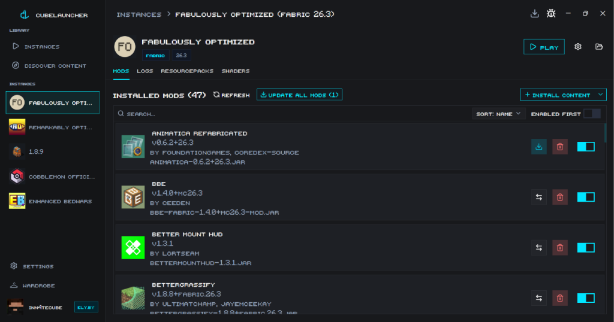
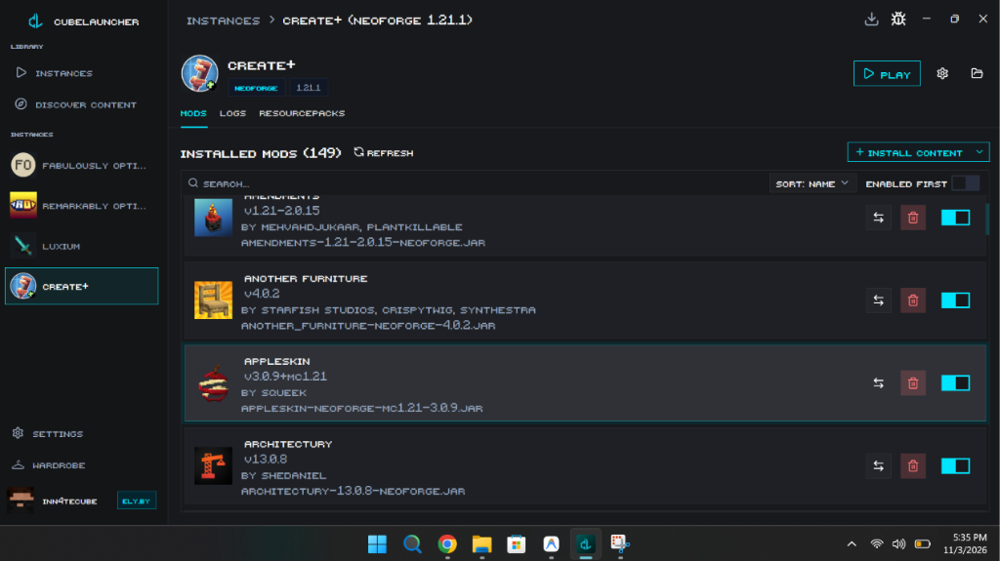
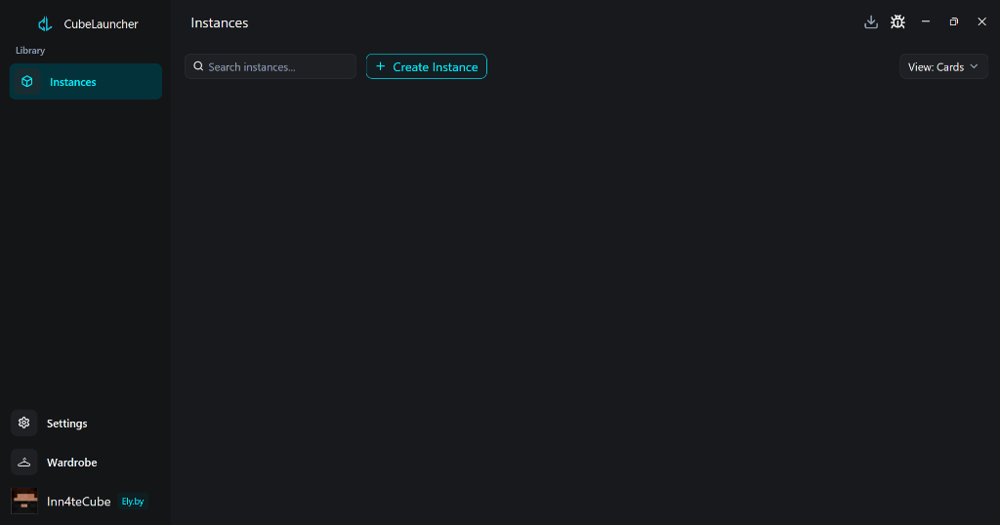
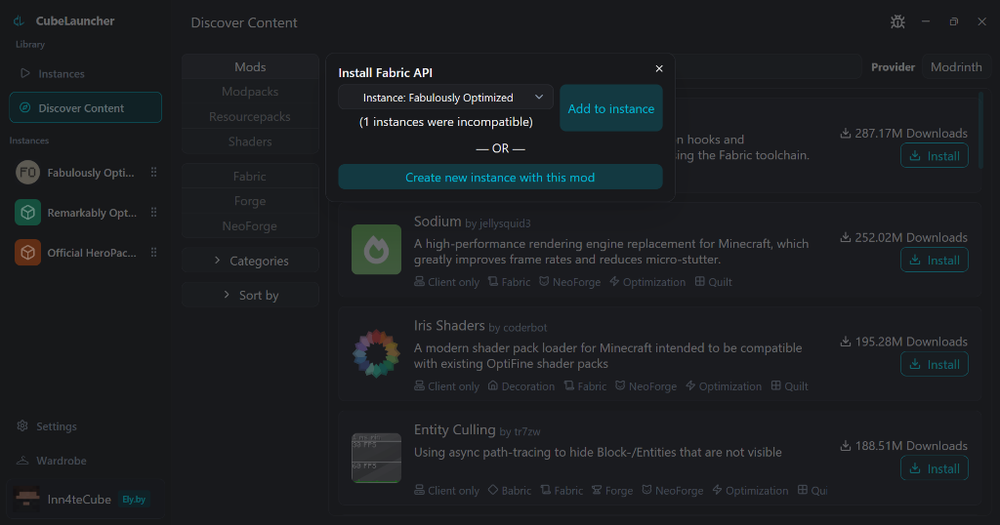

The Minecraft Launcher
Engineered for Speed.
Instant startup, unified Modrinth & CurseForge mod ecosystem, atomic batch updates, and an interactive 3D skin studio. Zero Electron, zero bloat, pure performance.

All of this. Built into the launcher.
Experience a native UI designed from the ground up for responsiveness, clarity, and total control.
Atomic Batch Updates & Mod Management
Tired of updating 20 mods one by one? CubeLauncher batches downloads, tracks overall progress, resolves dependencies, and replaces files without crashing your mod list.
- 1-Click Update All Mods: Automatic sha1 verification and version compatibility matching.
- Instant Toggles: Enable or disable individual mods instantly without moving files outside.
- Real-Time Search & Sorting: Filter hundreds of installed mods instantly with zero lag.

Isolated Sandbox Instances & Loaders
Run Fabulously Optimized on Fabric, Create+ on NeoForge, and classic modpacks side by side. Each instance gets completely isolated configurations, mods, and saves.
- All Major Mod Loaders: Full first-class support for Fabric, NeoForge, Forge, Quilt, and Vanilla.
- Custom JVM & Memory Tuning: Pin exact RAM limits, customize garbage collection flags, and select Java runtimes.
- Fast Copy & Duplication: Clone entire modpacks in seconds with hardlinks and delta caching.

Modrinth & CurseForge in One Place
No need to jump between websites or install separate launcher apps. Browse, search, filter, and install mods, resource packs, and shaders directly inside CubeLauncher.
- Unified Search: Query Modrinth and CurseForge simultaneously with live download counters and ratings.
- Dependency Auto-Resolver: Automatically detects and installs required library mods in one click.
- Shaders & Resource Packs: Instantly install shaderpacks and texture packs directly into instance folders.

Built for Performance. Engineered in Rust.
Traditional launchers wrap bloated Chromium instances. CubeLauncher is compiled directly to native machine code with GPU-accelerated UI rendering.
Rust + GPUI Native Power
Unlike launchers that consume 400MB+ of RAM running Chromium/Electron in the background, CubeLauncher runs on a custom GPUI engine with a razor-thin memory footprint (~35MB) and zero frame stutter.
Native Rust • GPU AcceleratedAtomic Batch Updates
Upgrade all outdated mods in one go. Our download engine batches packages, validates sha1 hashes, and cleanly replaces outdated files without cache errors.
Zero ConflictsEly.by & Offline Skins
Playing on cracked, LAN, or Ely.by servers? CubeLauncher automatically embeds CustomSkinLoader into your modded instances so your skins always render.
Works on All ServersMulti-Account Freedom
Seamlessly switch between verified Microsoft accounts (with official Java ownership checks), Ely.by profiles, and offline accounts with distinct skins and settings.
Microsoft • Ely.by • OfflineCrash Log Diagnostics
Instant crash detection and 1-click log uploading directly to pastebin services, making troubleshooting broken mods effortless.
One-Click UploadHow does CubeLauncher compare?
See why players are switching from bloated legacy launchers to a native, high-performance client.
| Feature / Metric | CubeLauncher | Official Launcher | Prism Launcher | CurseForge App |
|---|---|---|---|---|
| Startup Speed | < 0.2s (Instant) | 4.5s | 1.8s | 7.2s |
| Idle RAM Usage | ~35 MB | 280 MB+ | 90 MB | 420 MB+ (Electron) |
| UI Technology | Rust + GPUI (Native) | CEF / Web | C++ / Qt | Chromium / Electron |
| Real-Time 3D Skin Wardrobe | ✓ Built-in | ✕ Static only | ✕ None | ✕ None |
| Atomic Batch Mod Updates | ✓ 1-Click Batch | ✕ None | ✓ Manual | ✓ CurseForge only |
| Universal Accounts (Microsoft + Ely.by + Offline) | ✓ All 3 Built-in | ✕ Microsoft only | ✓ Microsoft & Offline | ✕ Microsoft only |
| Ads & Data Trackers | Zero (100% Open Source) | Telemetry | Zero | Heavy Ads & Overwolf |
Questions? Answers.
Everything you need to know about CubeLauncher, accounts, and mods.
Yes, 100%! CubeLauncher is completely free and open-source under the GPL-3.0 license. There are no subscriptions, no locked features, no advertisements, and zero telemetry.
CubeLauncher gives you full freedom. You can log in with an official Microsoft account to join official Mojang servers, sign in with an Ely.by account for custom skins, or play completely offline in cracked mode for singleplayer and custom servers.
Unlike modern launchers that package an entire Google Chromium browser (Electron) to render their interface, CubeLauncher is written in 100% native Rust using GPUI (the hardware-accelerated rendering engine behind Zed). It draws directly to your GPU with sub-millisecond latency and ultra-low RAM usage.
CubeLauncher includes automatic CustomSkinLoader injection. When you launch a modded instance (Fabric, Forge, NeoForge, or Quilt) with an Ely.by or offline account, CubeLauncher automatically loads your skin from both local storage and Ely.by's servers, allowing your skin to appear on servers and in LAN play.
CubeLauncher supports all Minecraft versions from classic 1.8 through modern 1.20, 1.21+, and beyond. Mod loaders include Fabric, NeoForge, Forge, Quilt, and unmodded Vanilla.
You can report bugs, request features, or contribute code directly on our official GitHub repository.